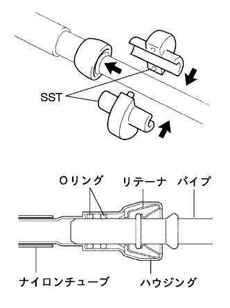
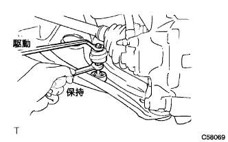
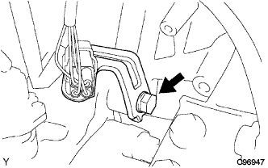
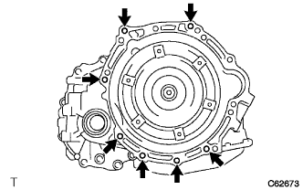

Partial engine removal removal |
| 1. Fuel leakage prevention work |
 |
Cut the connector for the hand pump ASSY.
Engine start
Start the engine.
After the engine stops naturally, turn off the ignition switch.
Crank the engine again and confirm that it will not start.
Remove the fuel tank cap and remove the pressure in the fuel tank.
Remove the battery's minihana stormy.
Attach the fuel pump ASSY connector.
| 2. Remove the front tire |
| 3. Engine undercover RH removal |
Remove two bolts and two screws.
Remove the nut and remove the engine undercover RH.
| 4. Engine undercover LH removal |
Remove two bolts and two screws and remove the engine undercover LH.
| 5. Cooling solution (Toyota genuine super LLC) extract |
Open the radiator kayatsu.
Loosen the radiator dollen cock plug and extract the cooling solution.
| 6. Pull out the automatic trance axleflood |
Remove the drain plug and gasket and extract the fluid.
Tighten the drain plug via a new gasket.
| 7. Remove the battery |
Remove the nut and bolts and remove the battery clamp.
Take off the battery.
Take off the battery tray.
| 8. Air cleaner ASSY removal |
Remove the air cleaner cap w/air cleaner hose No.1.
Remove the air cleaner filter element.
Remove the four bolts and remove the air cleaner case W/Air Cleanine Let No.1 and No.2.
| 9. Radiator Inlet House Remove |
Remove the clamp and remove the radiator inlet hot.
| 10. Radiator outlet hole removal |
Remove the clamp and remove the radiator outlet hot.
| 11. Oil cool linelet hole cut off |
Remove the clamp and disconnect the oil cool line lettuce hose.
| 12. Oil Cooler Outlet House Cut |
Remove the clamp and separate the oil cooler outlet hot.
| 13. Radiator Grill W/Radiator Support Seal UPR |
Use the clip resover to remove the six clips.
 |
Paste the protective tape around and on the radiator support seal UPR and the radiator support seal UPR.
Use a flathead screwdriver with a protective tape to remove the support seal behind the vehicle with the three claws in the figure.

Lift the radiator support seal UPR and remove the radiator grilled claws from the gaps.

Check that the claws are off and remove the radiator grill.
Remove the radiator support seal UPR.
| 14. Food rock ASSY removes |
Remove the three bolts and remove the Bonnettorotsuku ASSY.
 |
Cut the Bonnetro Torotsuku Control Cable ASSY from Bonnettorotsuku ASSY.
| 15. Food rock support SUB-ASSY |
Remove the three bolts and remove the hood (food) rock support.
| 16. Remove the food rock support brace |
Separate the clamp of the bonnet lock control cable.
Remove the four bolts and remove the bonnet (food) rock support brace.
| 17. Radiator support SUB-ASSY UPR is removed |
Separate the horn ASSY connector and clamp.
Remove the four bolts and one clip and remove the radiator support UPR.
| 18. Radiator Asset |
Cooling fan motor connector and wire harness clamp are separated and radiator ASSY is removed from the vehicle.
 |
Remove the three bolts and remove the fansloud W/fans.
 |
Remove the two bolts and remove the waterfifa.
From the radiator associate, remove the sabled radiator support Kutsushion and Radiator Support LWR.
| 19. Cylinder head cover No.2 |
 |
Remove the four nuts and remove the cylinder head cover No.2.
| 20. Accelerator control cable removal removal |
Remove the accelerator control cable ASSY.
| 21. Column shift transmission control cable ASSY disconnection |
Remove the nuts and clips and separate the column shift transmission control cable ASSY.
| 22. Union toe check valve hose is removed |
Cut the Union Tsu check valve hose from the booster vacuum tube.
| 23. Hita Water Hose Inlet A Cut off |
Cut the Hita Water Inlet Hose A from the radiator heater unit.
| 24. Hita Water Hose Outlet A Cuts |
Cut the Hita Water Outlet Hose A from the radiator heater unit.
| 25. Fuel tube SUB-ASSY disconnection |
|  |
Use SST to separate the Fuuelchu Ubu.
| 26. Fan & alternator V belt removed |
 |
Loosen the adjustment bolt A and the fixing bolt B.
Remove the V belt by loosening the tension of the V belt.
| 27. Cooler compressor w/magnet clutch ASSY |
Cut the connector.
Remove the four bolts and separate the compressor ASSY.
| 28. Wire harness cut off |
Take off the club box.
Cut the engine wire from the engine control computer and junction block.
Pull out the engine wire into the engine room.
Cut the engine wire from the engine room J/B.
Cut the ground wire.
| 29. Steering column hole cover plate is removed |
Remove the two clips and remove the hole cover plate.
| 30. Steering sliding York SUB-ASSY disconnection |
 |
Attach the seat belt so that the steering wheel does not rotate.
 |
Loosen the bolts on the column side (A) of the sliding yoke.
Remove the bolt on the gear side (B) of the sliding yoke.
Mark the sliding yoke and the interimide shaft, and separate the sliding yoke.
 |
Remove the clip A and separate the hole cover from the body.
| 31. Exhaust pipe ASSY FR removed |
Remove two bolts and two springs.
Remove the two exhaust pipe support and remove the exhaust pipe ASSY FR.
| 32. Front axle shaft nut LH removed |
 |
Set SST according to the groove of the drive shaft, and use a hammer to solve the kashime.
Use Soketsu trench (30mm) to remove the hub nut.
| 33. The front axle shaft nut RH is removed |
| 34. Speed sensor FR LH separation |
Remove the bolt and separate the speed sensor wire and flexible hose from the shock absorber ASSY.
 |
Cut the clip from the shock absorber ASSY.
 |
Remove the bolt and separate the speed sensor FR from the steering knuckle.
| 35. Speed sensor FR RH separation |
| 36. Stabilizer bar cut separation |
|  |
Fix the bolt with a spanner (10mm) and remove the nut.
Take two and two cushions and two cushions and separate the stabilizer bar.
| 37. Front suspension Rower arm No.1 LH cut off |
Remove the cotter pin and castle nut.
 |
Use SST to separate the ball joint part of the Rewer Arm No.1 from the steering knuckle.
| 38. Front suspension Lower arm No.1 RH disconnection |
| 39. Tie rod end sub-assy LH separation |
Remove the cotter pin and castle nut.
 |
Use SST to separate the tie rod end from the steering knuckle.
| 40. Tie rod end sub-assy RH separation |
| 41. Front axle ASSY LH separation |
Use a plastic hammer to lightly hit the tip of the drive shaft ASSY and remove the shaft and axle asser.
Press the front axle ASSY to the outside of the vehicle and pull out the drive shaft ASSY from the axle ASSY.
| 42. Front axle assemble separation |
| 43. Front drive shaft ASSY LH removed |
 |
Use the SST to remove the drive shaft ASSY.
| 44. Remove the front drive shaft ASSY RH |
 |
Use a brass bar and a hammer to remove the drive shaft ASSY.
| 45. Engine ASSY W/Transxle removes |
 |
Set the engine lifter.
 |
Remove 5 bolts and nuts and remove the engine mounting insulator RH.
 |
Remove the two bolts and separate the engine mounting insulator LH.
 |
Remove the four bolts and remove the engine Assing W/Transxle and front suspension cross member from the vehicle.
| 46. Bane pump ASSY disconnection |
 |
Remove the vane pump V belt.
Loosen the fixing bolt A and bolt B for adjustment.
Remove the V belt by loosening the tension of the V belt.
Cut the connector.
Remove the two bolts and cut the vane pump ASSY from the engine.
| 47. Front suspension cross member SUB-ASSY |
 |
Attach the engine hanger (12281-21010) with a bolt (91642-81025) to the point in the figure.
Use engine ring devices and chain blocks to hold the engine ASSY W/Transxle and front suspension cross member.
Remove the through bolt of the engine mounting insulator RR and engine mounting bracket RR and remove the front suspension cross member.
| 48. Starter ASSY removes |
 |
Turn over the terminal.
Remove the nut and remove the 30 terminals.
Remove the two bolts and remove the starter ass.
Cut the connector.
| 49. Remove the wire harness |
Remove the bolt and remove the air cleaner bracket.
 |
Remove the bolt and remove the wire harness clamp from the automatic trance axle.
|  |
Remove the bolt and remove the wire harness clamp from the automatic trance axle.
| 50. Cut the connector |
Separate the oxidian ensenta catnector, the transmission wire catnector, the neutral start switch connector and the revolution sensor crypto.
| 51. Automatic Trans Axle ASSY is removed |
 |
Fix the crankshaft dampa using SST.
 |
Remove six torque converter set bolts.
|  |
Remove the seven bolts and remove the automatic transxle.
| 52. Drive plate & ring gear SUB-ASSY |
|
Use SST to fix the crankshaft dampa and remove the drive plate.
| 53. Ignition coil No.1 |
Remove the connector and bolt of the ignition coil and remove all the ignition coils.
| 54. Remove the alternator ASSY |
 |
Take off the terminal cap.
Remove the nut and remove the+B terminal.
Cut the connector.
Take off the wire harness clamp.
 |
Remove the bolt A and nuts and remove the fan belt agasting bar.
 |
Remove the bolt B and remove the alternator.
| 55. Intake manly removal removal |
Remove the two bolts and remove the vacuum tube for the brake booster.
Separate the wire harness from the intake manly hold.
 |
In the order of the figure, remove 3 bolts and two nuts, and remove the intake manly.
Remove the gasket from the intake manly hold.
| 56. Remove the oil level gauge guide |
Take off the oil level gauge.
Remove the bolt and remove the oil level gauge guide.
| 57. Water bypass pipe No.1 removal |
Remove two bolts and two nuts, and remove the water bypass pipe No.1.
| 58. Remove the water inlet |
Remove the two nuts and remove the water -inlet w/radiator outlet hot.
| 59. Removal of thermostat |
Remove the thermostat w/gasket.
| 60. Engine oil pressure switch ASSY removal |
Cut the connector for oil pressure switch.
Use a deep socket wrench (24mm) to remove the oil pressure switch.
| 61. Remove the knock control sensor |
 |
Use SST to remove the knock control sensor.
| 62. E.F.I. Water Tenpalacha Sensor |
 |
Use SST to remove the water tempalacha.
| 63. Exhaust manifold Heat Insulator No.1 |
Remove the four bolts and remove the exhaust manifold heat insulator.
| 64. Maniholdo support bracket removal |
Remove the three bolts and remove the manifold support bracket.
| 65. Exhaust manly removal removal |
Remove 3 bolts and two nuts and remove the exhaust manifold.